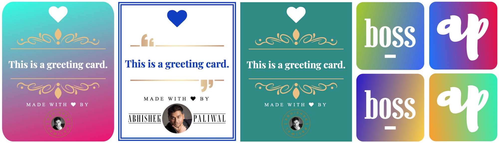
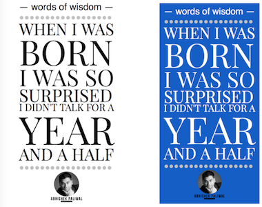
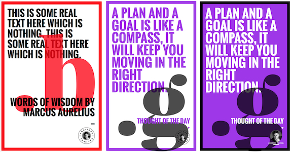
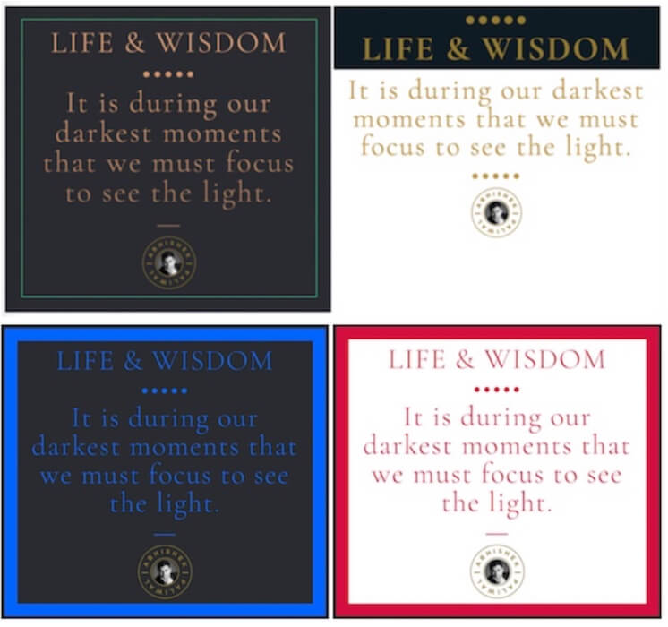
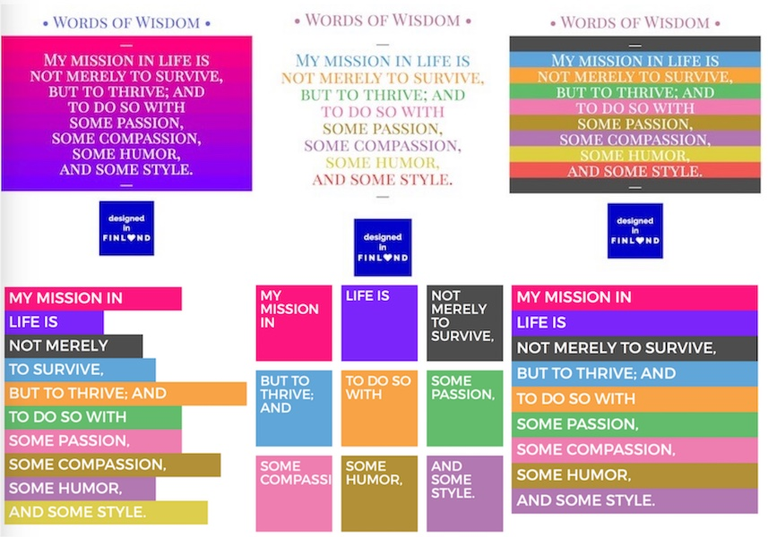
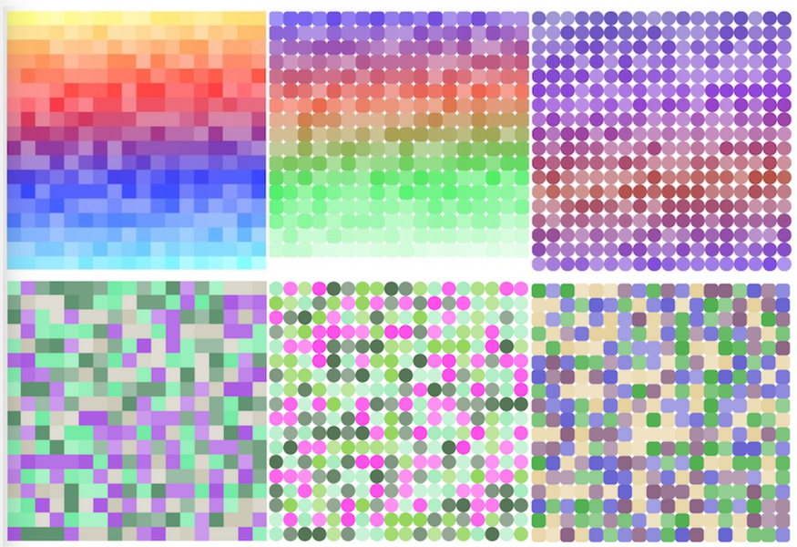

.git
MGGK-recipe-schema-markup-creator
images
sample-screenshots-of-wallpapers
wallpaper_creators
- 01-abhisheks-material-greetings-maker.html
 - 02-abhisheks-qlocktype-quote-maker.html

- 03-abhisheks-bigtext-slabtype-wallpaper-maker.html
 - 04a-CONCEPRO-abhisheks-text-on-image-unsplash.html
- 04b-CONCEPRO-text-on-image-polygonal.html
- 05-create-shadowed-image-card.html
- 06-create-overlayed-text-boxes-with-drop-shadows.html
- 07-create-highlighted-text-boxes.html
- 08-abhisheks-long-shadow-wallpaper.html
- 09-abhisheks-create-elegant-retro-shadows.html
- 10-MGGK-create-Sponsored-Post-Cover-image.html
- 11-create-big-alphabet-card.html
 - 12-MGGK-create-pinterest-food-cover-card.html

- 13-create-GOLDEN-CHAMPAGNE-card.html
 - 14-MGGK-create-custom-image-cover-for-blog-posts.html
- 15-CONCEPRO-create-STATISTICS-card.html
- 16-create-two-color-gradient-text-quote.html
 - 17-CONCEPRO-Create-Circular-Typography-Div.html
- 18-CONCEPRO-Create-Banner-Images.html
- 19-Instagram-Like-Color-Grid-Maker.html
 - 20-CONCEPRO-Create-Custom-Graphic-Book-Covers.html